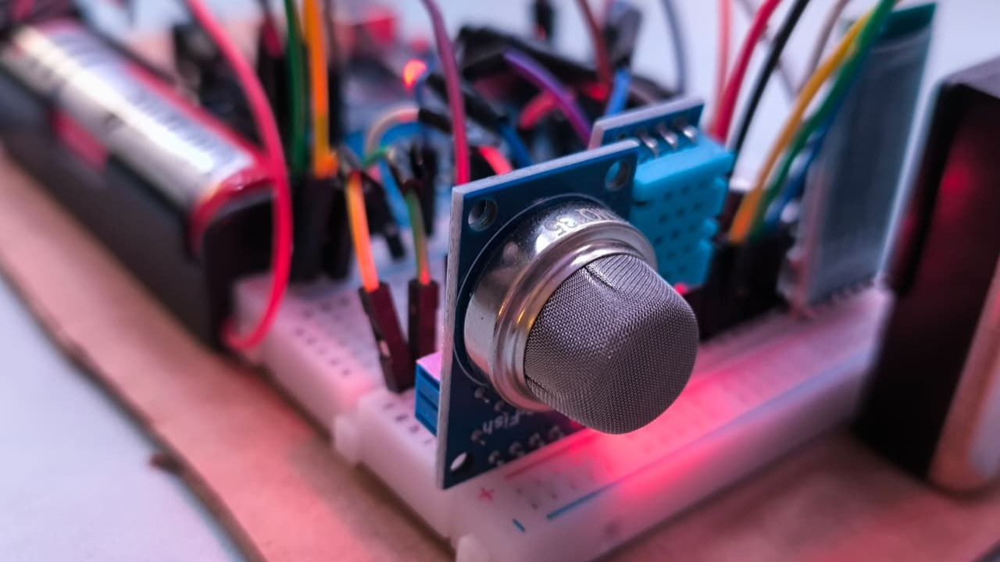
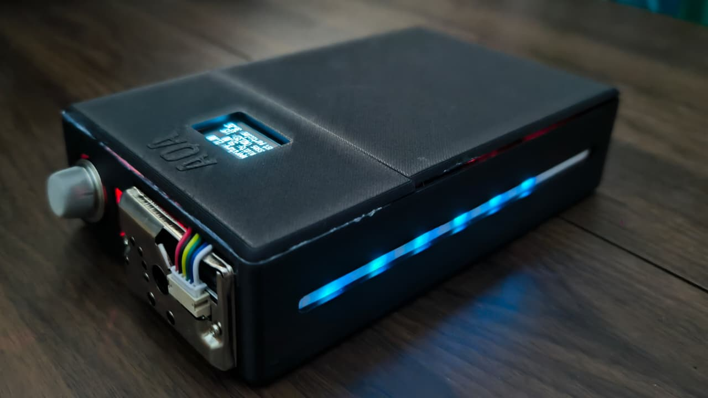
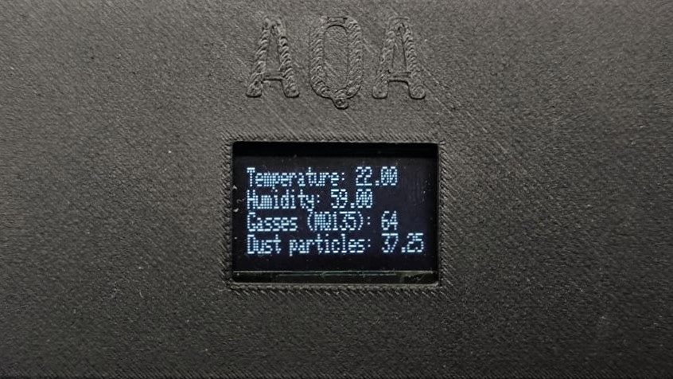
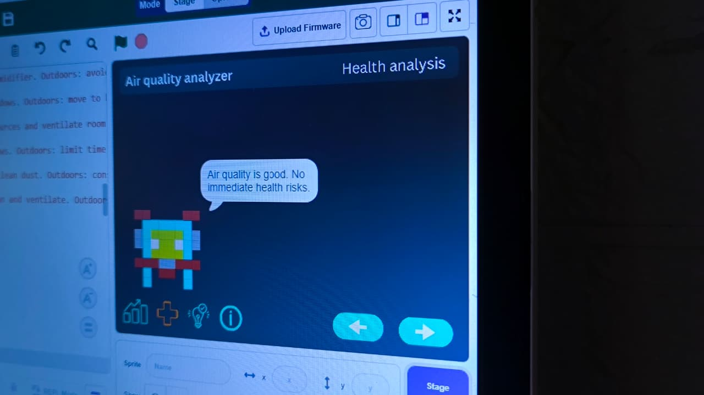
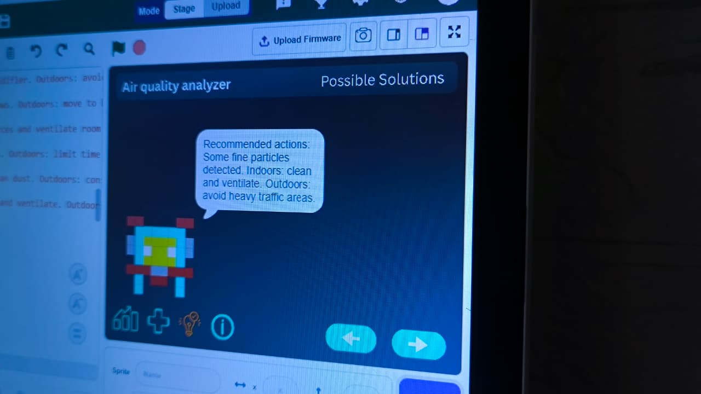
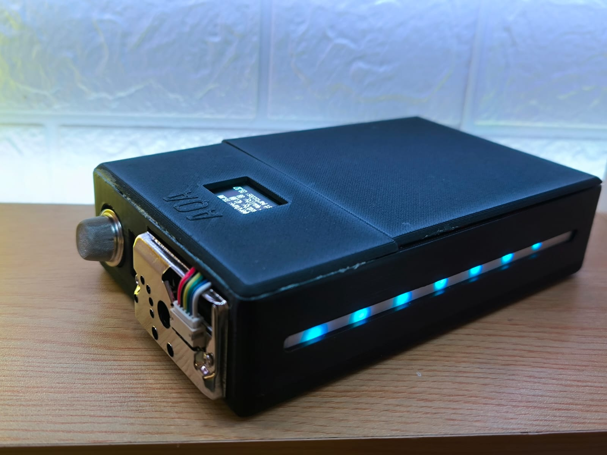
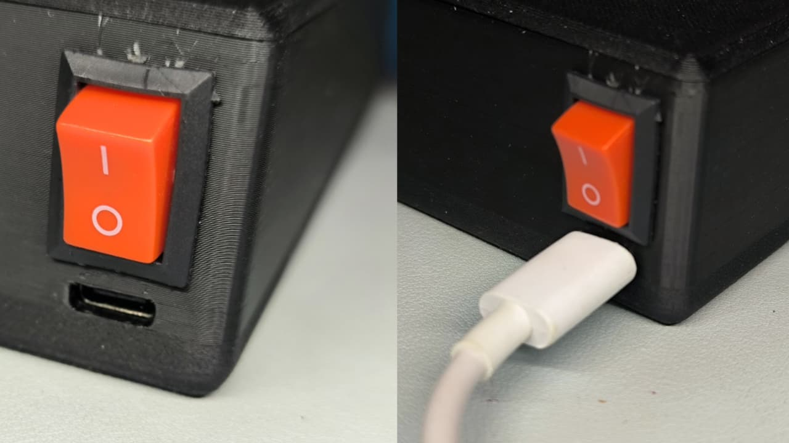
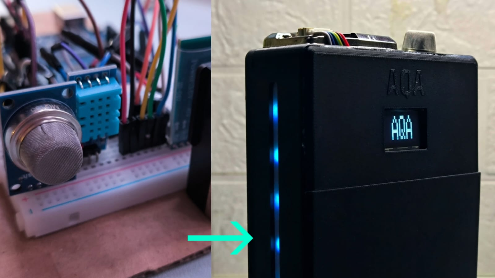

Air quality analyzer V2
Turning Air Data into Health Awareness.
Click anywhere to proceedHi, my name is Billy!
I am currently 17 years old and i like doing things in my free time such as coding, gaming and photography! I created the air quality analyzer as i believe that air quality is a major factor to having a long term healthy and happy life.
Why air quality matters
High air quality is very much important for good health as it heavily impacts the cardiovascular and respiratory systems. Poor air quality can lead to asthma, heart attacks and even lung cancer, something not many people are aware of which is currently a massive problem.
Factors affecting air quality
Temperature, humidity, harmful gas concentration and dust particles are major factors affecting air quality, therefore, it is important to keep an eye on them.
The solution
A reasonable solution is to create a device which does not only measures the factors affecting air quality, but to also predict the possible health issues based on the current air quality, along with providing simple solutions that almost everybody can follow, because the device dosent only display sensor readings, but also educate others on the impact and prevention to bad air quality.

Air quality analyzer V2 (AQA2)
The AQA2 is a portable device which uses several sensors to measure the environments air quality. It is also paired with a software made in pictoblox.

Measure of the factors of air quality
The AQA2 shows human readable sensors readings, allowing people to be aware, monitor and visualize how the quality of the air. however, many may not understand what the readings mean.

Health issue prediction
This is where people get educated about what the sensor reading means, this feature allows the device to predict the possible health issues and the severity that can be caused by the current air quality.

Solution finder
To avoid health issues, people must take action. The solution finder allows people to know what action to take to improve the current air quality.

Portability and independence
The AQA2 is a very portable device as it is lightweight, somewhat robust and does not require cables to power on or pair with the software, allowing for convenience when wanting to measure air quality. The device can also display readings without actually connecting to the software, further boosting convenience in situations where software is difficult to run.

Eco friendly
The AQA2 is an eco friendly product in the long term as it is powered by a rechargable battery instead of a disposable one, greatly reducing waste. It also uses a USB-C cable to charge, which is owned by many people already, further reducing waste.

Cleaner and stronger
The AQA2 is an upgraded version of the original air quality analyzer. It is now encased by a 3D printed material, significantly improving its design and increasing its durability. An OLED screen is also added to display sensor readings independant of software connection. LED strip indicator is also added to display how good the air quality is.
